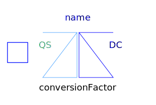
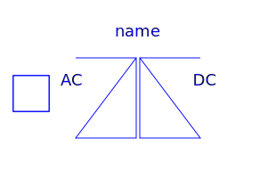

This package hosts utilities for test examples of quasi stationary single phase circuits. Quasi stationary theory for single phase circuits can be found in the references.
| Name | Description |
|---|---|
|  IdealACDCConverter | Ideal AC DC converter |
|  GraetzRectifier | Graetz rectifier bridge |